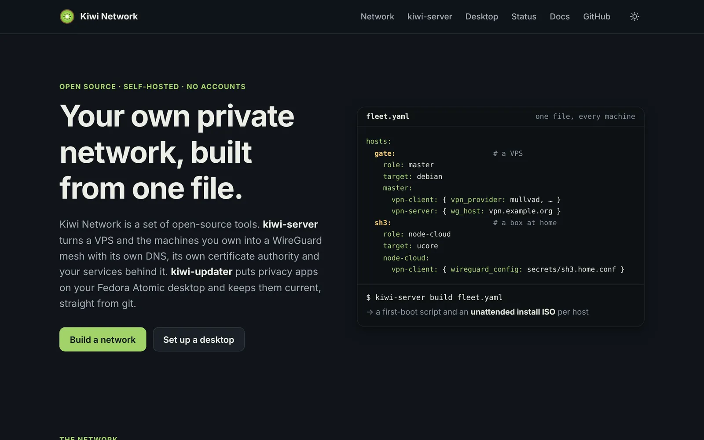
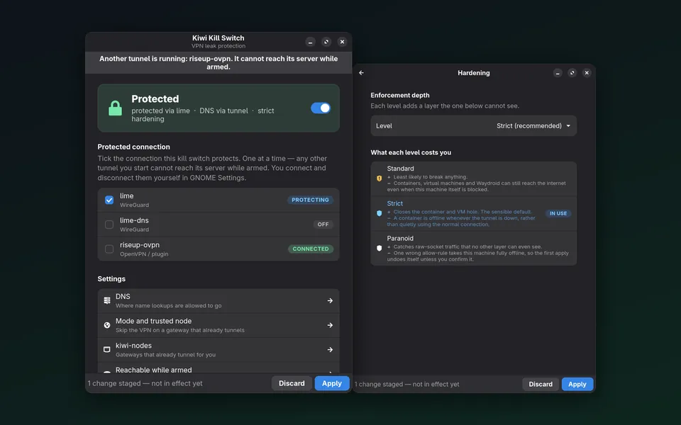
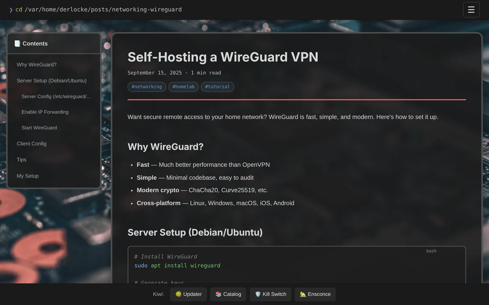
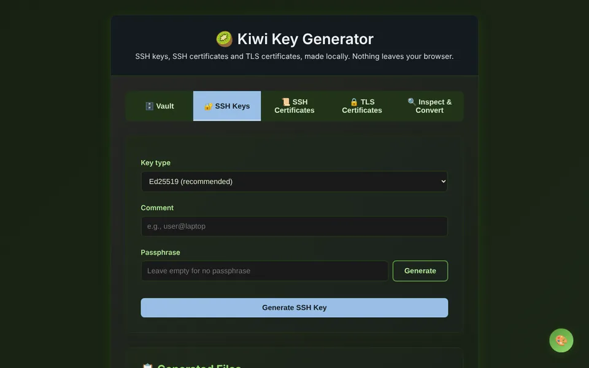
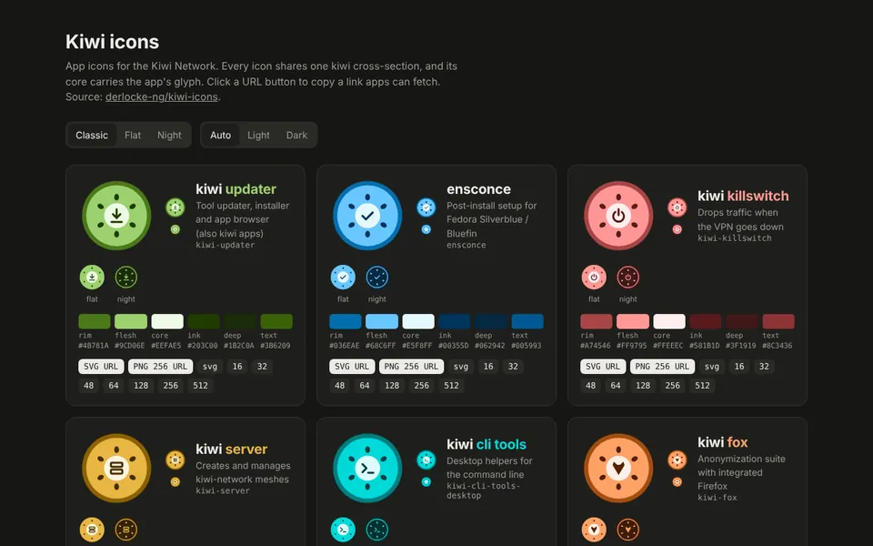
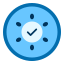
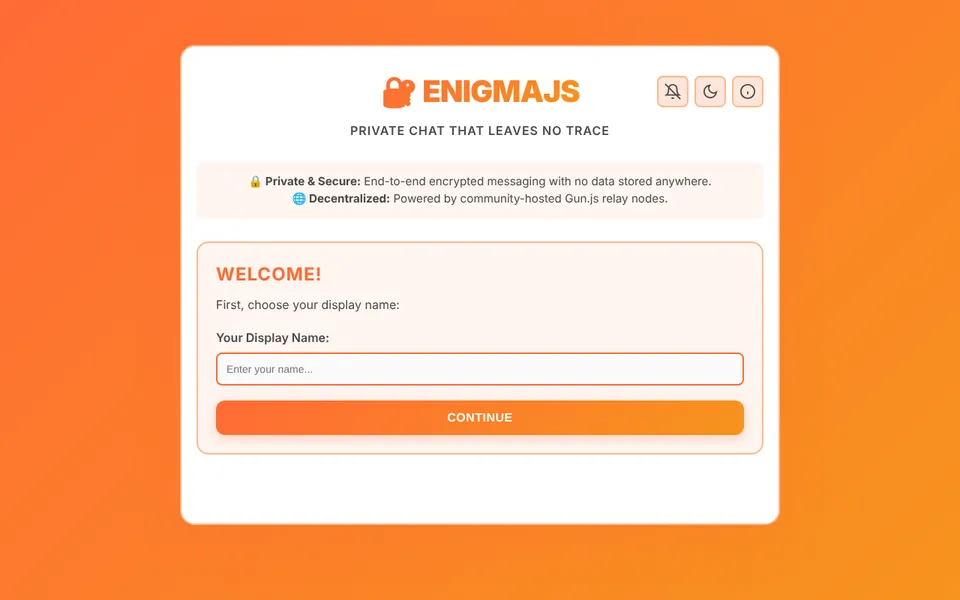

Schwerpunkt
Linux-Server
Einrichtung und Pflege von Servern mit Debian oder Fedora CoreOS: Installation, Absicherung, Updates, Backups, Fehlersuche. Bestehende Server übernehme ich ebenfalls.
Verfügbar für neue Projekte
Ich bin Maximilian Locke, IT-Freelancer mit Schwerpunkt Linux und Netzwerke. Ich richte Server ein und betreue sie, baue VPNs, automatisiere wiederkehrende Aufgaben mit Bash und Python und erstelle Webseiten und Icons – auf Wunsch mit Betreuung über das Projekt hinaus.
Leistungen
Schwerpunkt sind Linux-Server und Netzwerke. Dazu kommen Webserver und Datenbanken, Automatisierung, Container, Webseiten und Icons – als einzelner Auftrag oder mit laufender Betreuung.
Einrichtung und Pflege von Servern mit Debian oder Fedora CoreOS: Installation, Absicherung, Updates, Backups, Fehlersuche. Bestehende Server übernehme ich ebenfalls.
Fernzugriff und Verbindungen zwischen Standorten mit WireGuard, OpenVPN oder SoftEther, Firewall-Regeln, eigenes DNS mit Werbefilter, interne Zertifikate.
Apache (auch mit php-cgi) und nginx, PHP-Anwendungen und WordPress, Datenbanken mit MariaDB/MySQL, PostgreSQL oder SQLite.
Wiederkehrende Aufgaben als Bash- oder Python-Skript, zeitgesteuert per systemd-Timer: Backups, Updates, Installationen, Auswertungen.
Dienste wie Nextcloud, Vaultwarden oder einen Chat-Server (Matrix, XMPP) einrichten und betreiben – in Containern mit Docker oder Podman, hinter einem Reverse Proxy mit HTTPS.
Festplattenverschlüsselung mit LUKS, auch mit Entsperrung übers Netzwerk, SSH-Zugang nur mit Schlüsseln, Firewall, automatische Sicherheitsupdates, VPN-Kill-Switch für Laptops.
Webseiten mit HTML, CSS und JavaScript, ohne Tracking und ohne Baukasten; Web-Apps mit Vue oder Node.js. Hosting auf eigenem Server oder kostenlos über GitHub Pages.
App-Icons, Favicons und Logos als SVG, auf Wunsch als zusammenhängendes Set in mehreren Varianten, mit PNG-Exporten in allen benötigten Größen.
Fedora Silverblue oder Bluefin einrichten – Software, Einstellungen, automatische Updates – und per Skript auf weitere Rechner übertragen.
Hosting
Ich richte den Dienst ein, betreibe ihn und halte ihn aktuell. Ihre Daten können Sie jederzeit vollständig exportieren.
Statische Seiten, PHP-Anwendungen und WordPress auf Apache oder nginx, mit HTTPS.
Dateien, Kalender und Kontakte für Familie, Verein oder Team.
Vaultwarden, nutzbar mit den Bitwarden-Apps auf allen Geräten.
Matrix oder XMPP – ein eigener Messenger-Server statt eines fremden Dienstes.
WireGuard, OpenVPN oder SoftEther für Fernzugriff und die Vernetzung von Standorten.
Pi-hole für das ganze Netzwerk, mit eigenen Namen für interne Dienste.
MariaDB/MySQL oder PostgreSQL für Ihre Anwendungen, mit regelmäßigen Backups.
Ihre Software oder ein anderer Open-Source-Dienst, als Container betrieben.
Zusammenarbeit
Je nach Aufgabe rechne ich nach Aufwand, zum Festpreis oder als monatliche Pauschale ab.
Einzelauftrag
Für einzelne Aufgaben und akute Probleme.
Abrechnung nach Aufwand · Stundensatz auf Anfrage
Projekt
Für klar umrissene Vorhaben mit festem Ziel.
Fester Umfang, fester Preis, feste Termine
Betreuung
Für Server und Dienste, die dauerhaft betreut werden sollen.
Monatliche Pauschale · planbare Kosten
[Falls zutreffend:] Gemäß § 19 UStG wird keine Umsatzsteuer berechnet (Kleinunternehmerregelung).
Portfolio
Ein Großteil meiner Arbeit ist Open Source: Code, Dokumentation und Entwicklungsverlauf sind öffentlich einsehbar. Hier eine Auswahl – alle Projekte finden Sie in der Projektübersicht.

Infrastruktur · Netzwerk · Automatisierung
Mehrere Server – VPS, Heimserver, LAN-Gateways – sollen reproduzierbar installiert, sicher vernetzt und dauerhaft aktuell gehalten werden. kiwi-server erzeugt aus einer einzigen fleet.yaml für jeden Host ein Rollen-Skript, eine Ignition- bzw. Preseed-Konfiguration und ein ISO, das sich ohne Rückfragen selbst installiert.
cloud.sh3.home ohne Browser-Warnung
Netzwerksicherheit · Linux-Desktop
Ein VPN-Kill-Switch, der im Fehlerfall sicher schließt: Bricht der Tunnel ab, verlässt kein Datenpaket mehr den Rechner – auch nicht beim Neustart, beim WLAN-Wechsel oder über USB-Tethering. Ein Root-Dienst verwaltet die Firewall, bedient wird er ohne Passwortabfrage über GNOME, eine GTK4-App oder die Kommandozeile.

Webentwicklung
Ein eigener Static-Site-Generator mit Admin-Oberfläche im Browser: Beiträge werden online geschrieben, als Git-Commit gespeichert und automatisch gebaut und veröffentlicht. Keine Datenbank, kein Server, keine laufenden Kosten.

Web-App · Kryptografie
Eine Web-App zum Erstellen und Verwalten von SSH-Schlüsseln, SSH-Zertifikaten und einer eigenen TLS-Zertifizierungsstelle – vollständig lokal, ohne dass ein Schlüssel die Seite verlässt.
openssl verify -x509_strict und Apples Anforderungen an TLS-Serverzertifikate
Icon-Design
Jede Kiwi-App bekommt dasselbe Grundmotiv – einen Kiwi-Querschnitt –, in dessen Kern das Symbol der jeweiligen App sitzt. So erkennt man die Zusammengehörigkeit sofort und kann die Apps trotzdem auseinanderhalten.

ensconceAutomatisches Setup für Linux-Arbeitsplätze
EnigmaJSVerschlüsselter P2P-Chat mit Vue 3 & Gun.js mullvad-socks5Proxy-Listen, alle 6 Stunden automatisch erzeugt tangpodTang-Server für automatische Festplatten-EntschlüsselungTech-Stack
Die Werkzeuge, die ich einsetze, und wofür ich sie bisher genutzt habe. Die Liste ist nicht vollständig – wenn Ihr System fehlt, fragen Sie einfach nach.
Debian, Fedora CoreOS, uCore, Proxmox VE, systemd
Server einrichten und pflegen. Unbeaufsichtigte Installation per Preseed bzw. Ignition, automatische Updates mit Neustart im Wartungsfenster, virtuelle Maschinen und LXC-Container unter Proxmox.
WireGuard, wg-easy, OpenVPN, SoftEther VPN, gluetun
Fernzugriff und Verbindungen zwischen Standorten. Ein WireGuard-Mesh mit zentralem Zugangspunkt und Ausgang über einen VPN-Anbieter (kiwi-server), ein Kill-Switch für den Desktop (kiwi-killswitch).
nftables, iptables, Pi-hole, systemd-resolved, NetworkManager, OpenWrt
Firewall-Regeln für Server und Gateways, netzweites DNS mit Werbefilter, Schutz vor DNS-Lecks, LAN-Gateways, die ihren Verkehr durch ein VPN leiten.
Apache (auch mit php-cgi), nginx, PHP, WordPress
Webseiten, PHP-Anwendungen und WordPress betreiben; nginx als Reverse Proxy mit HTTPS vor Container-Diensten.
MariaDB, MySQL, PostgreSQL, SQLite
Datenbanken für Web-Anwendungen einrichten, sichern und umziehen.
Docker, Docker Compose, Podman (auch rootless), Portainer
Dienste als Compose-Stacks betreiben, eigene Images bauen und per GitHub Actions veröffentlichen (tangpod), getrennte Container-Netze mit eigener Firewall (kiwi-fox).
Nextcloud, Vaultwarden, Matrix, XMPP, Pi-hole, Tang, SFTP
Cloud, Passwort-Manager, Chat-Server und mehr auf eigener Hardware oder einem vServer, hinter Reverse Proxy und VPN.
LUKS, Clevis/Tang, OpenSSH, OpenSSL
Festplatten verschlüsseln und übers Netzwerk entsperren, SSH-Zugang nur mit Schlüsseln oder Zertifikaten, eigene Zertifizierungsstelle für interne HTTPS-Dienste.
Bash, Python, systemd-Units und -Timer, Jinja2, GitHub Actions
Skripte für wiederkehrende Aufgaben, Konfigurationen aus Vorlagen erzeugen, zeitgesteuerte Jobs, Builds und Tests in der CI.
Fedora Silverblue, Bluefin, GNOME, Flatpak, rpm-ostree
Image-basierte Desktops einrichten und per Skript auf weitere Rechner übertragen (ensconce), Software über Git-Kataloge verteilen (kiwi-updater).
Bash, Python, JavaScript, TypeScript, PHP, Go, Rust
Bash und Python für Werkzeuge und Automatisierung, JavaScript für Web-Apps. Mit TypeScript, PHP, Go und Rust habe ich ebenfalls gearbeitet.
HTML, CSS, JavaScript, Vue 3, Vite, Node.js
Webseiten ohne Framework und ohne Tracking, Web-Apps mit Vue, eigene Static-Site-Generatoren in Node.js und Bash.
Gun.js (SEA), IPFS, WebRTC (PeerJS)
Web-Apps ohne zentralen Server: verschlüsselter Chat (EnigmaJS), Pinnwand (DevBoard), Netzwerkspiel (pongjs).
Python mit GTK4/libadwaita, GNOME-Shell-Erweiterungen
Oberflächen für die eigenen Werkzeuge, etwa die Einstellungs-App von kiwi-killswitch und die App-Übersicht von kiwi-updater.
SVG, rsvg-convert
Icon-Sets und Logos als SVG, PNG-Exporte in allen Größen per Skript (kiwi-icons).
Arbeitsweise
Server richte ich per Skript bzw. Konfigurationsdatei ein. So bleibt nachvollziehbar, was eingerichtet ist, und ein System lässt sich bei Bedarf neu aufsetzen.
Zugangsdaten, Dokumentation und auf Wunsch die Skripte. Sie sind nicht von mir abhängig.
Ich setze auf Open Source: keine Lizenzkosten, und Ihre Daten bleiben in offenen Formaten exportierbar.
SSH-Schlüssel statt Passwörter, Firewall und automatische Sicherheitsupdates sind Teil jeder Einrichtung.
Hosting in der EU oder bei Ihnen vor Ort, Vertrag zur Auftragsverarbeitung. Diese Website setzt weder Cookies noch Tracking ein.
Vorab eine realistische Aufwandsschätzung. Wenn eine Aufgabe nicht zu meinen Kenntnissen passt, sage ich das.
Ablauf
Klare Schritte, keine Überraschungen – vom ersten Gespräch bis zur langfristigen Betreuung.
Kostenlos und unverbindlich per Telefon oder Video. Sie schildern Ihr Anliegen, ich stelle die richtigen Fragen.
Sie erhalten einen klaren Vorschlag mit Aufwand oder Festpreis – verständlich und ohne Kleingedrucktes.
Ich setze um, halte Sie auf dem Laufenden und dokumentiere jeden Schritt nachvollziehbar.
Sie bekommen Dokumentation und Einweisung. Danach bleibe ich erreichbar – auf Wunsch mit Wartungsvertrag.
Über mich
Ich betreue Linux-Server und Netzwerke und schreibe die Werkzeuge dafür oft selbst. Unter dem Namen derlocke entwickle ich Kiwi Network, Open-Source-Werkzeuge für private Netzwerke und Linux-Arbeitsplätze – darunter kiwi-server, das Server aus einer Konfigurationsdatei aufsetzt, und kiwi-killswitch, einen VPN-Kill-Switch für GNOME.
Als Freelancer übernehme ich am liebsten überschaubare Projekte, die ich danach weiter betreue. Meine Kunden sollen wissen, an wen sie sich wenden können, wenn etwas nicht funktioniert.
Ich arbeite remote für Kunden in ganz Deutschland und vor Ort im Raum [Region].
FAQ
Für kleine Unternehmen, Selbstständige, Praxen, Vereine und Privatpersonen – überall dort, wo es keine eigene IT-Abteilung gibt, aber zuverlässige Technik gebraucht wird.
Die meisten Aufgaben erledige ich sicher aus der Ferne per SSH oder VPN. Termine vor Ort sind im Raum [Region] möglich, darüber hinaus nach Absprache.
Ja. Ich verschaffe mir zuerst einen Überblick, dokumentiere den Ist-Zustand und schlage Verbesserungen vor – Sie entscheiden, was davon umgesetzt wird.
Das hängt vom Umfang ab: Kleine Aufgaben rechne ich nach Aufwand ab, klar umrissene Projekte zum Festpreis und die laufende Betreuung als monatliche Pauschale. Das Erstgespräch ist kostenlos, und Sie erhalten vorab immer ein verständliches Angebot.
Mit einem Betreuungsvertrag gelten fest vereinbarte Reaktionszeiten. Ohne Vertrag helfe ich so schnell, wie es meine Auslastung zulässt – sprechen Sie mich in dringenden Fällen gern direkt an.
In einem Rechenzentrum in der EU oder auf Hardware bei Ihnen vor Ort – Sie entscheiden. Einen Vertrag zur Auftragsverarbeitung nach Art. 28 DSGVO erhalten Sie selbstverständlich, und Ihre Daten können Sie jederzeit vollständig exportieren.
Ja. Ich gestalte einzelne App-Icons, Favicons und Logos ebenso wie komplette Icon-Sets – als skalierbare SVGs mit PNG-Exporten in allen benötigten Größen, auf Wunsch passend zu Ihrer bestehenden Farbwelt.
[Falls zutreffend:] Nein. Als Kleinunternehmer gemäß § 19 UStG berechne ich keine Umsatzsteuer.
Kontakt
Schreiben Sie mir kurz, worum es geht – ich melde mich in der Regel innerhalb von ein bis zwei Werktagen. Das Erstgespräch ist kostenlos und unverbindlich.
Füllen Sie die Felder aus – daraus entsteht eine fertige E-Mail in Ihrem E-Mail-Programm. Diese Website überträgt dabei keine Daten.